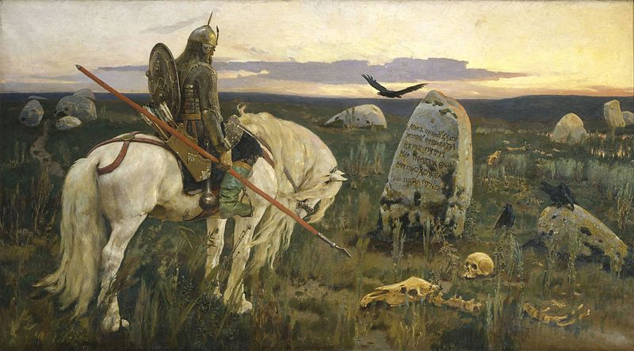

Creating a character
Roll 3d6 for each of your Ability scores:
- Strength
- Dexterity
- Will
You may choose to swap two of these scores.
Roll 1d6 for your Hit points (HP).
HP is a measure of your character’s ability to avoid life-threatening wounds.
Roll 1d100 to determine how many Schillings you have.
Roll on the starting equipment table.
The starting equipment table should vary based on your setting. There is an example table below.
Starting equipment table
Match your highest ability score in the furthest left column with your HP on the top row to find your Starting equipment.
If your roll includes an Arcanum then you should also roll on the Starting arcana table.
| 1 HP | 2 HP | 3 HP | 4 HP | 5 HP | 6 HP | |
|---|---|---|---|---|---|---|
| 3-9 | Saber (d6) Musket (d8) Arcanum 3 Bombs (2d12) Walking Stick |
Rapier (d4) Hatchet (d8) Arcanum Pliers Caltrops |
Musket (d8) Pistol (d6) Arcanum 3 Bombs (2d12) Pick axe |
Hatchet (d6) Shortsword (d6) Pliers Grease |
Machete (d6) Bow and arrow (d6) Walking stick Deck of Cards |
Great Sword (d8) Blunderbuss (d10) Sewing needle |
| 10 | Musket (d8) Shortsword (d6) Arcanum Weapon repair kit |
Pistol (d6) Bow and arrow (d6) Arcanum Lock pick |
Hatchet (d6) Great Sword (d8) Arcanum Weapon repair Kit |
Dagger (d6) Bayonette (d6) Grappling hook |
Pistol (d6) Hatchet (d6) Crowbar Compact mirror |
Concealable pistol (d6) Musket (d8) Pick axe 10 Schillings |
| 11 | Blunderbuss (d10) 1 Stick of Dynamite (3d6) Arcanum Acid Compact mirror |
Maul (d8) Throwing axe (d6) Arcanum Lock pick Caltrops |
Dagger (d6) Net Arcanum Weapon repair kit |
Rapier (d4) Pistol (d6) Grease Armor (1) |
Club (d6) Bow and arrow (d6) Chisel 2 sticks of Dynamite (3d6) |
Glaive (d6) Throwing knives (d4) Caltrops Weapon repair kit |
| 12 | Axe (d6) Whip (d4) Arcanum Pick axe 10 Schillings |
Spear (d6) Pistol (d6) Iron piton Crowbar |
Halberd (d8) Pistol (d6) Shovel Armor(2) |
Pistol (d6) Maul (d8) 3 bombs (2d12) Grease |
Saber (d6) Shortsword (d6) Lock pick Caltrops |
Machete (d6) Musket (d8) Shovel Sewing Needle |
| 13 | Shortsword (d6) Pistol (d6) Arcanum Acid Armor (2) |
Great Sword (d8) Hatchet (d6) Chisel Acid |
Bow and arrow (d6) Rapier (d4) Grappling hook Lock pick |
Halberd (d8) Bayonet (d6) Pick axe Spyglass |
Musket (d8) Shortsword (d6) Weapon repair kit Cigarettes |
Wood Staff (d6) Dagger (d6) Hammer 2 Sticks of Dynamite (3d6) |
| 14 | Dagger (d6) Musket (d8) Arcanum Pick axe 3 flashbangs |
Bow and arrow (d6) Grappling hook Spyglass Pliers |
Throwing axe (d6) Halberd (d8) Armor (1) Crowbar |
Club (d6) Hatchet (d6) Armor (2) Cigarettes |
Club (d6) Blunderbuss (d10) Weapon repair kit Caltrops |
Great Sword (d8) Pistol (d6) Sewing needle 2 Sticks of Dynamite (2d12) |
| 15 | Spear (d6) Axe (d8) 10 Schillings 3 bombs (2d12) |
Club (d6) Shortsword (d6) 1 Stick of Dynamite (3d6) Grappling hook |
Machete (d6) Hatchet (d6) Shovel Caltrops |
Great Sword (d8) Bayonet (d6) Grappling hook Weapon repair kit |
Axe (d6) Saber (d6) 2 sticks of dynamite (2d12) Pick axe |
Great Sword (d8) Bow and arrow (d6) 10 Schillings 1 bomb (2d12) |
| 16 | Saber (d6) Bow and arrow (d6) Armor(1) Dice 1 flashbang |
Dagger (d6) Dagger (d6) Lock pick 10 Schillings |
Maul (d8) Saber (d6) Armor(1) Crowbar |
Shortsword (d6) Pistol (d6) Weapon repair kit Spyglass |
Bow and Arrow (d6) Rapier (d4) Armor (2) Lock pick |
Hatchet (d6) Wood staff (d6) Caltrops 10 Schillings |
| 17 | Halberd (d8) Musket (d8) Armor (2) Pick axe |
Spear (d6) Concealable pistol (d6) Chisel Compact mirror |
Axe (d6) Throwing knives (d4) 2 Sticks of Dynamite (3d6) Chain and lock |
Throwing Axe (d6) Throwing knives (d4) Iron pitons 1 flashbang |
Wood Staff (d6) Net 10 Schillings Chain and lock |
Musket (d8) Pistol (d6) Poison darts (d4) Cigarettes |
| 18 | Bayonet (d6) Musket (d8) 3 sticks of dynamite (3d6) Weapon repair kit |
Dagger (d6) Hatchet (d6) Dice Iron pitons |
Club (d6) Pistol (d6) Crowbar Weapon repair kit |
Rapier (d4) 1 stick of dynamite (3d6) Chisel Weapon repair kit |
Pistol (d6) Throwing Knives (d4) Shovel Caltrops |
Wood Staff (d6) Hatchet (d4) Shovel Caltrops |
Character advancement
Characters gain Experience (XP) by surviving encounters and interacting with the world.
- 1 XP: A simple encounter with minor damage
- 2 XP: A difficult encounter with moderate damage but no fatalities
- 3 XP: A dangerous encounter with a fatality or permanent consequences
- 4 XP: A deadly encounter with multiple fatalities, massive damage, or harrowing retreat
Complex interactions with NPCs, especially if they are accompanied by difficult choices, should also provide XP. Finding a teacher or patron can be another source of XP.
When you gain enough XP to Advance, roll a d20 for each ability score. If the roll is greater than your score, raise it by 1, to a maximum of 18.
Characters advance along the following schedule.
- Level 1 : 5 XP
- Level 2: 10 XP
- Level 3: 20 XP
- Level 4: 40 XP
- Level 5: 80 XP
If your Characters survive past Level 5, continue doubling the XP requirement for each additional level.
XP is not cumalative. Everytime a character Advances to the next level their XP count returns to 0.
At each Advancement, choose an Advancement skill. Each Advancement skill includes a hit die. Roll this die and add it to your maximum HP, to a maximum of 20.
You’ll want to create Advancement skills specific to your setting, but here are some examples.
At each Advancement, choose one of the below. Each Advancement includes a hit die. Roll this die and add it to your maximum HP, to a maximum of 20.
If your campaign is long-running, listen to your players to create further Advancement options that increase their power and cool factor. Just be sure to make them work for it!
Advancements
| Advancement | Hit die | Description |
|---|---|---|
| Healer | d4 | Use your Action to tend to an injured ally. Your medical skill, charms, and potions return d4+2 hit points. |
| Assassin | d6 | When you attack an enemy who is unaware of your presence, your damage hits their Strength score directly, bypassing their hit points. |
| Sure-footed | d6 | You never lose your balance or grip in difficult or slippery terrain. Effectively, you don’t need to make Dexterity Saves in situations that involve slipping, falling, or balancing. |
| Thief | d6 | You can unlock any door, vault, or chest, and disarm any trap. Use of your Thief tools does not cost an additional Supply per Turn. |
| Silent steps | d6 | You always move completely silently. |
| Blade in the dark | d6 | When you hide in deep shadow, you are invisible until someone is right on top of you. |
| Gunslinger | d6 | Use your action to reload two firearms, or use a bonus action to reload one firearm. |
| Berserker | d8 | You may choose to ignore the effects of damage taken by instead taking d6 Will damage. |
| Ironclad | d8 | Double the value of any armor you wear. Eg, 1 armor grants 2, 2 armor grants 4 |
| Swashbuckler | d8 | Whenver you slay a target with a melee attack, you may immediately make and additional melee attack against another target within range. |
Sorcery
To become a Sorceror requires training from a knowledgeable master, a pact with an appropriate patron, or contact with magical energy. A player annot choose this advancement otherwise.
The Sorceror advancement can be given any flavor you like, and you could easiliy substitute the word wizard, druid, warlock etc.
Choose a spell list and magic system from another game you enjoy, or make up spells as you go along.
| Sorceror | d4 | May be chosen multiple times. You can cast spells. Your maximum known spells is 2, plus 1 for each time you choose this advancment. |
A Character at level 3 or higher may also choose from the advancements below.
| Veteran | d8 | Whenever you attack, you may add an additional effect, such as knock back, blind, trip, throw, immobilize, disarm etc. The target may Save if the Referee deems that appropriate. |
| Weapon Master | d8 | May be chosen multiple times. Choose one weapon type. Attacks with that weapon are always Enhanced. |
Starting arcana
| Roll | Arcana | Description |
|---|---|---|
| 1 | Glass rose | Choose one of your senses and amplify its acuity to uncanny levels. |
| 2 | Kendama | Choose a living thing in your line of sight. Swap places with it immediately. |
| 3 | Hairpin staff | This wooden hairpin extends in length and width up to the size of a log. It can be broken, though it has the strength of well constructed alloyed metal. |
| 4 | Wolf talisman | Become a werewolf. Your speed and strength are increased. Your attacks deal d8 damage and your armor is increased to 3. After 20 minutes, you make a Strength Save. If you fail, you return to your normal form and are incapacitated until you can rest. If you succeed, you return to your normal form with no complications. |
| 5 | Umbrella | Pop it open to glide down from great heights. It can support 2 people, but loses it’s effectiveness with more weight. |
| 6 | Rusted crown | While wearing the crown you can sense intelligent creatures nearby. After use, make a Will Save. After 3 failed saves in a row, you refuse to take the crown off and it fuses with your skull. |
| 7 | Magnifying lense | Shrink an object to a size that would fit in a backpack. The lense can also restore the object to its original size. It can only be applied to one object at a time. If applied to a living creature, the user must make a Will Save or the creature returns to normal size with a deformity. |
| 8 | Obsidian dagger | Wetting this dagger with your own blood allows your spirit to project outside of your body. You can then float freely through the air and through objects. Take heed, beings that inhabit those formless realms may take notice. |
| 9 | Whale bone flute | Play a melody and make a Will Save. If you pass, your song summons an angelic being. If you can convince this being that your cause is worthwhile, make a specific request and the being will aid you. If you fail, you summon a demon who immediately begins attacking everyone nearby. The angel or demon has HP 10, Strength 14, Dex 11, Will 14, and Armor 2. |
| 10 | Talisman of protection | Create a 1 yard (meter) diameter forcefield with 10 HP. Attacks or beings you do not wish to enter cannot pass. If the forcefield is reduced to 0 or less HP, make a Will Save. If you fail, you take the full brunt of the damage that shattered the shield as Will damage. |
| 11 | Monster mask | While wearing this mask any non-monstruous humanoid will be terrified of your. Wearing this in a crowded place will likely result in a mob trying to capture and kill you. |
| 12 | Akhashic records | With a specific domain of knowledge or question in mind, open this book and peer into the void. The knowledge you seek is yours. Successive uses on the same day require a Will Save. If you fail take d12 Will damage. |
| 13 | Seance candle | Light this candle and call the spirit of a specific non-living person. If you light the candle in front of a corpse you can summon that person’s spirit. |
| 14 | Bird familiar | Leaves and sticks in the form of a bird and imbued with life. The bird behaves as an extension of your will. It has the same HP as your character. If it ever reaches 0 HP it is dead. |
| 15 | Ivory turtle | Humanoids that see this little carved turtle become hypnotized by its energy. Hypnotized victims make a Will Save each turn. Once they pass a Save, the turtle no longer has an effect on them. |
| 16 | Spider twine | Shoot a strand of sticky spider web. Enemies trapped by multiply strands must make a Strength Save to break free. |
| 17 | Enchanted spear | This finely crafted spear deals d8 damage. When thrown, it will reverse course and fly back to its owner on the next turn. |
| 18 | Lightning spear | This spear has two pincer like blades that electrify on contact. Hit a target, dealing d8 damage and forcing the target to make a Strength Save. One a fail, the target is stunned for their next turn. |
| 19 | Mask of the leper king | Provides 1 Armor. Anyone who lies while wearing this mask will contract leprosy. |
| 20 | Eye of the thief | Activate this stone carved eye to determine if your mark is carrying valuables or Arcana. This can only be used on one person per Turn. |